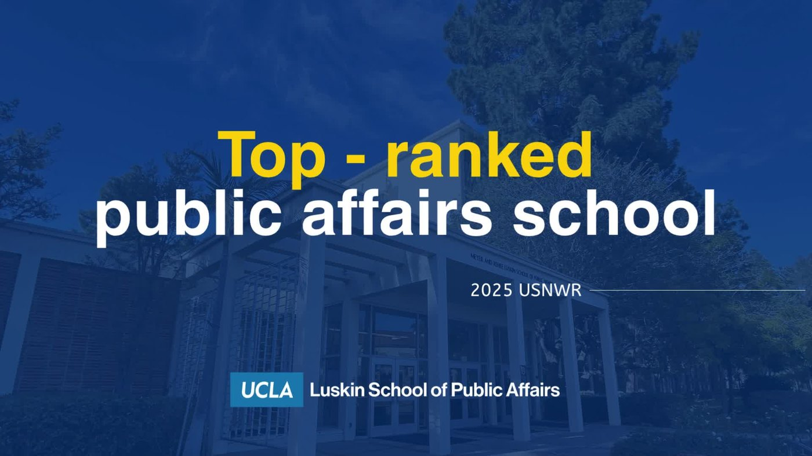

Stories and video
Promotional Media Samples
A small set of mobile-first story designs and short promotional videos for public-facing communications. This section is separated from research projects so the portfolio reads cleanly instead of becoming one giant suitcase of screenshots.

Story designs
Mobile-first visual assets


Video samples